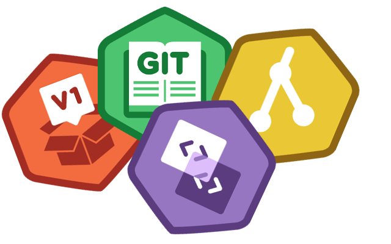

Qualifications
-
Eager to acquire Git and GitHub skills
Before applying for this position, I started with Try Git, then moved to Git Real from Code School and Git Basics from Treehouse. Then I moved to installing GitHub Desktop, followed by hosting this page on GitHub. I’m definitely eager to learn more about both Git and GitHub, but I’m hoping my immediate immersion in everything Git and GitHub shows my enthusiasm to acquire skills in both.
 -
Background as a developer or technology teacher
As an experienced technical writer and instructional designer, I have: created, edited, maintained, and published content for everything from Laboratory Information Systems, IT Security certifications, and payment authentication system implementations. I believe my experience developing multi-day IT Security certification review courses would be essential for this role. Working with SMEs and other team members, I created thousands of pages of content and more than my fair share of PowerPoint slides. To coincide with the courseware, I have created software simulations as ancillary labs.
-
Ability to convert knowledge into learning experiences
Firsthand experience is something I have always tried to use to increase the relatability of my content. In my experience, without the proper context an example doesn’t always provide the students with an engaging learning experience. I typically try to find scenarios that I have found myself in, or, other students have provided during previous trainings. Student questions are a great opportunity to identify new opportunities to improve course content and provide examples in future classes.
-
Ambition to help students learn job skills
I love helping people learn how to do something better or increase their efficiency. People work hard and have a lot on their plates, showing them ways to be more efficient in their daily tasks can free them up to spend time on upcoming deadlines. For instance, when I developed an internal training for using SnagIt, I discussed the effectiveness of creating keyboard shortcuts for frequently used profiles and how it could save time while capturing images.
-
Must possess a relaxed, knowledgeable, and classy disposition in front of people
I'm gregarious and can typically connect with someone within minutes of meeting them. I like to provide informed answers to questions and I'm not afraid to admit when I need to research something before providing an answer. When speaking with people professionally, I know I'm representing my organization with my actions and it is something I am consciously aware of. Although I typically have some form of beard, I always keep it groomed and professional looking.
-
Ability to critically discuss and write debriefs of training events
As a content developer, I have been on the receiving end of critical discussions and have taken part in daily recap meetings regarding training delivery and development and completed session debriefs. Additionally, I have been responsible for organizing, reviewing, and evaluating course surveys to identify areas of improvement for the course material as well as instructor delivery. I view feedback sessions as an excellent opportunity to grow as a professional and nurture my existing skill sets. I have always valued the role that feedback has on current and future content development.
-
Ability to collaborate and work well with others, including clients and team members
In my previous roles I have had the opportunity to work with project managers, business analysts, SMEs, official partners, and clients/customers. I have been responsible for providing support to students taking courses through in-person events, online classes, and using an iOS/Android app. I've worked with people inter-departmentally and always had a positive experience working on projects with multiple stakeholders. I'm a people person through and through, and pride myself in giving 100% when working in a group. That being said, when needed, I have no problem throwing on some headphones and working as a lone wolf.
-
Strong attention to detail
My work experience has offered me the opportunity to review, edit, and publish thousands of physical and electronic pages for public consumption. In my content reviews, I have looked for things like grammatical mistakes, layout issues, and inconsistent terminology use. Students lose faith in a product, if they catch mistakes or the examples provided are outdated. I often find myself critiquing the help documentation provided for different services and identifying how it could be better.
As a side note, the job posting has a small mistake in it, "Willingness to speak to a wide range of range of audience sizes", should be "Willingness to speak to a wide range of audience sizes".
-
Must be willing to travel 50% to customer sites
I love travelling for work, it gives me an opportunity to visit new places and meet new people. My previous roles have provided me with opportunities to travel both domestically and internationally (sometimes at a moment's notice) and I'm always excited about the opportunity to interact with customers, clients, and team members.
-
Must be legally authorized to work in the United States
I am legally authorized to work in the United States. I promise.